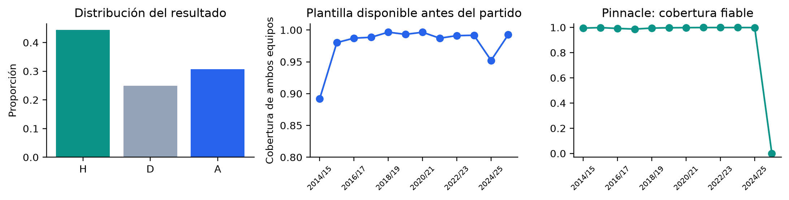
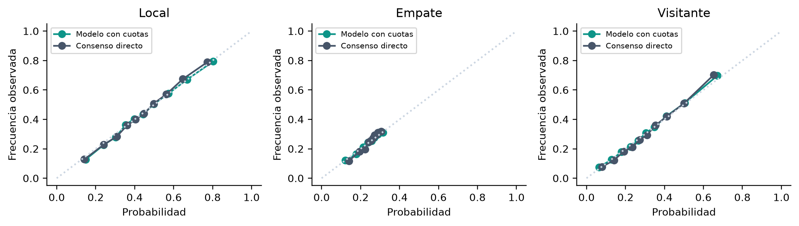
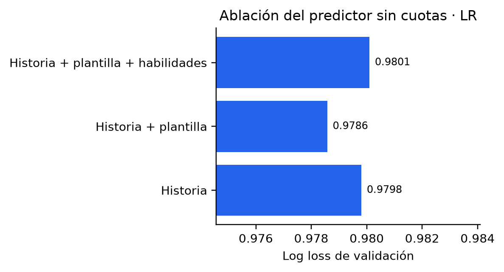
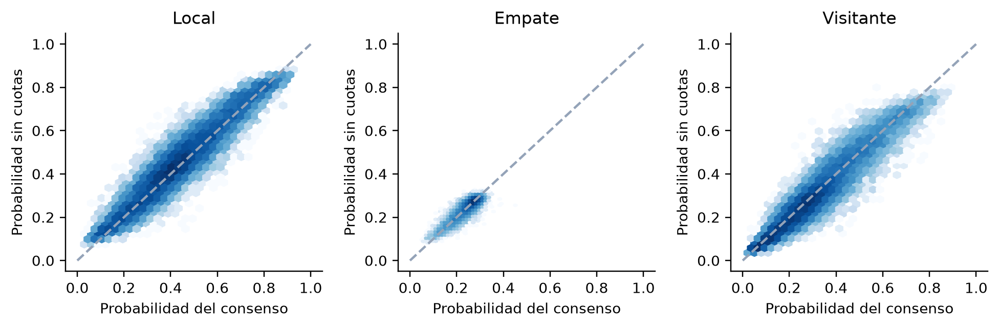
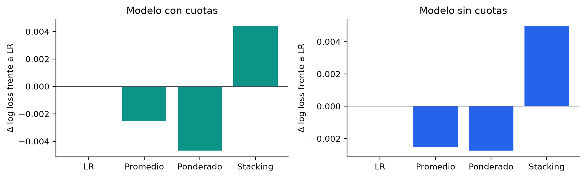
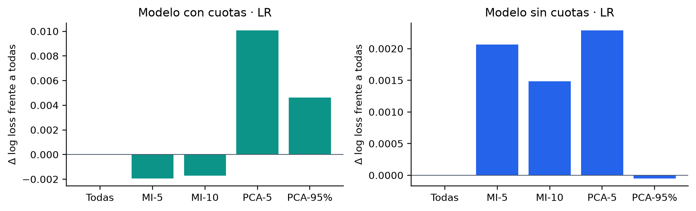
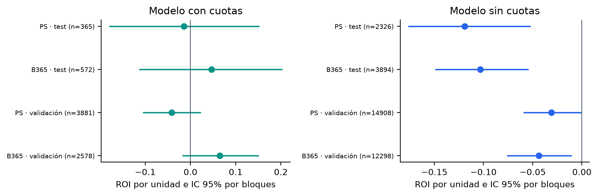

Dos preguntas, el mismo estándar de evaluación.
Con cuotas
¿Qué añade un modelo al precio del mercado?
Sin cuotas
¿Qué probabilidades podemos construir con información deportiva?
Dos preguntas, el mismo estándar de evaluación.
¿Qué añade un modelo al precio del mercado?
¿Qué probabilidades podemos construir con información deportiva?
José Luis Alva · Juan Carlos Ticlia · Elmer Villegas · Joseph Cose

36.150 partidos originales; 36.119 comparables. Ratings anteriores a cada partido, con faltantes y antigüedad visibles.
2014/15–2017/18: historia y ajuste inicial
2018/19–2023/24: seis folds exteriores; ajuste interior con pasado
2024/25–2025/26: reevaluación tras congelar decisiones
Consenso y Pinnacle fiable; comparación directa sin aprendizaje.
Elo, forma, plantilla, habilidades y contexto histórico.
LR · HGB · XGBoost · RF · MLP · SVM
Sin cuotas: también diferencia de goles convertida a probabilidades.
Elegido: LR referencia
| Modelo / referencia | Log loss | AUC | ECE masa |
|---|---|---|---|
| Consenso directo | 0.9664 | 0.6840 | 0.0143 |
| Pinnacle fiable / respaldo | 0.9657 | 0.6847 | 0.0138 |
| Modelo con cuotas | 0.9652 | 0.6844 | 0.0085 |
| Modelo sin cuotas | 0.9776 | 0.6716 | 0.0151 |
En validación: 0.9652 frente a 0.9664 del consenso.

Una mejora de log loss no implica necesariamente ordenar mejor: contrastamos también AUC y calibración.

Historia → plantilla → habilidades. Los ratings se cruzan por fecha y pueden proceder de una versión anterior.
Elegido: Promedio · LL validación 0.9776

Correlación logit con consenso 0.948; favorito coincidente 90.9 %. Cuotas justas = 1/P, sin margen.
| Modelo / referencia | Log loss | AUC | ECE masa |
|---|---|---|---|
| Consenso directo | 0.9668 | 0.6838 | 0.0221 |
| Pinnacle fiable / respaldo | 0.9663 | 0.6837 | 0.0208 |
| Modelo con cuotas | 0.9650 | 0.6834 | 0.0162 |
| Modelo sin cuotas | 0.9793 | 0.6678 | 0.0121 |
La comparación utiliza los mismos 5.999 partidos. Los contrastes pareados y sus intervalos están en el informe.


El ensemble mejora sin cuotas; con cuotas se prefiere LR. También probamos pesos y resampling 50/50; esas variantes son guiadas por mercado.

τ=0,02 fijo; una unidad por apuesta. Pinnacle se excluye desde el 23/07/2025. Los precios no tienen sincronización exacta entre casas.
Log loss revisado: 0.9650
Medimos el aporte respecto al precio directo.
Log loss revisado: 0.9793
Construimos probabilidades con información deportiva.
Limitaciones: ratings antiguos, alineaciones del juego, solo ligas y test observado. La siguiente prueba debe usar partidos futuros.
github.com/jcarlos-t/MLProject